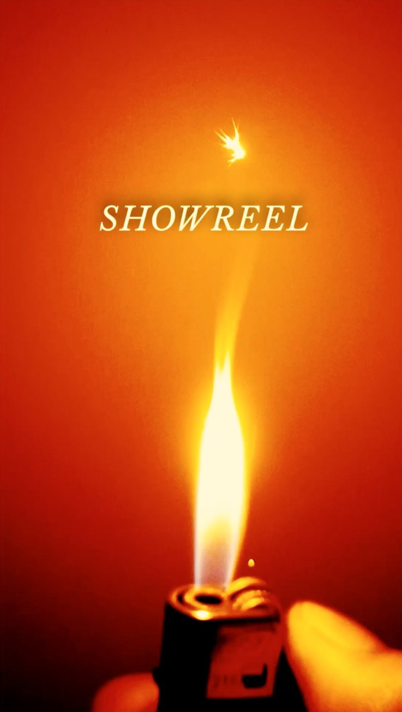
j’écris, je filme,
je monte, je compose :
des images qui racontent
et un son qui les porte.
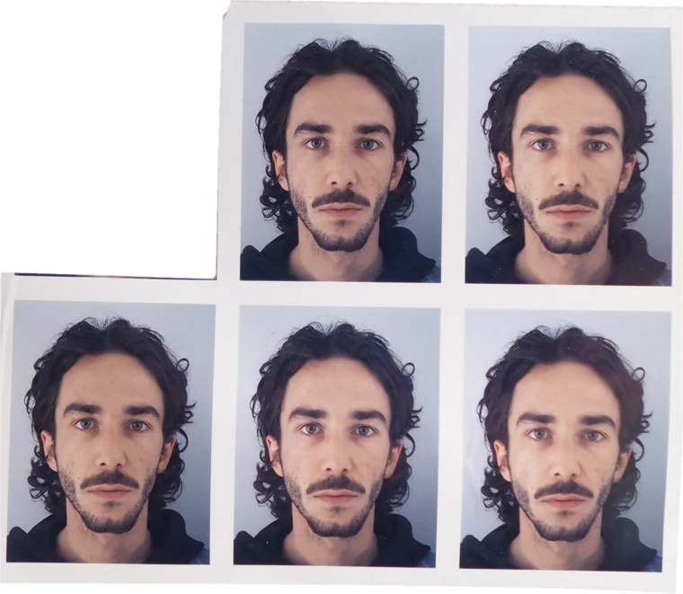
-
NEOLDchef de la
communication digitalevélos électriquesChef de la communication digitale chez Neold : refonte complète de l'identité de la marque (logo, graphisme), prise en charge de toute la vidéo, et création du studio photo pour les visuels des vélos sur le site.
- DA
- identité visuelle
- conception-rédaction
- vidéo
- studio photo
- web
-
INFLUENCEvidéaste, motion designer,
concepteur-rédacteuragence de communicationVidéos pour les clients de l'agence, du concept au montage : Baillardran (canelés, Halloween), Guinguette des Bassins (ouverture d'un bar à Bordeaux).
- concept
- cadrage
- montage
- motion design
- conception-rédaction
-
WE&vidéaste,
concepteur-rédacteuragence de communicationConception-rédaction et vidéo pour les galeries Aushopping (Foot Locker, Jules…), et film d'image de l'agence, « Nous & ».
- conception-rédaction
- vidéo
- motion design
- direction artistique
-
PERTINENCEvidéaste,
concepteur-rédacteur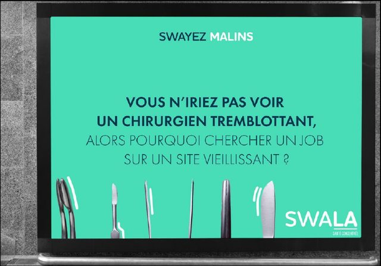
campagne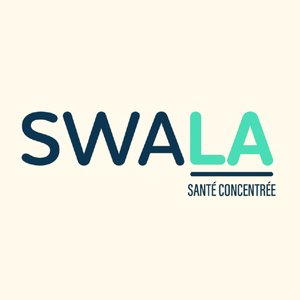
identité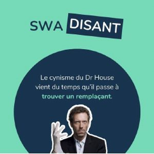
motion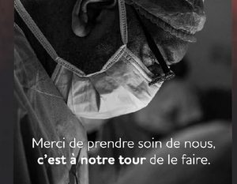
employeuragence de communicationVidéo et conception-rédaction pour les clients de l'agence : SWALA (création de A à Z : naming, signature, identité, campagne d'affichage, contenus animés), Si Bio, Bordeaux Mécènes Solidaires.
- vidéo
- motion design
- conception-rédaction
- plateforme de marque
-
LA BAIE DES SINGESchargé de communication
et d'événementielsalle de spectacleOrganisation de A à Z de la soirée de clôture de saison : marché de produits locaux, fanfare, spectacle. Modernisation du logo et création des produits dérivés (t-shirts), médiation culturelle et gestion des bénévoles.
- événementiel
- identité visuelle
- produits dérivés
- médiation culturelle
- gestion de bénévoles
-
SCIENCES PO BORDEAUXvidéaste
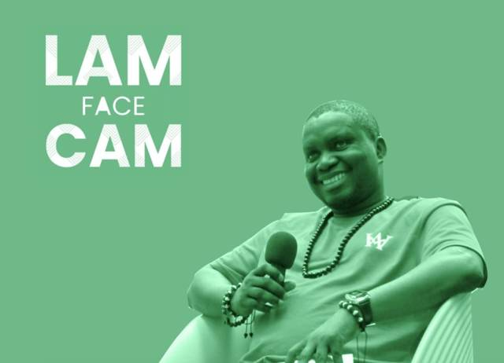
générique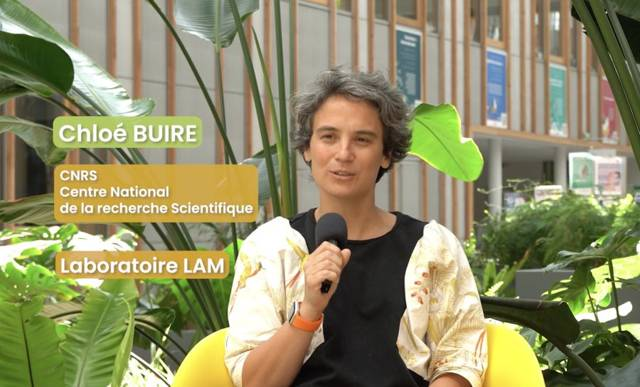
interview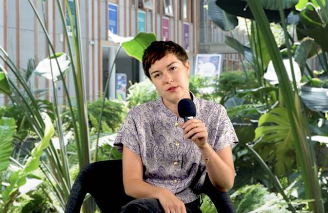
interviewécoleRefonte de la vitrine numérique du laboratoire LAM : série d'interviews de chercheurs et de doctorants, création du générique « LAM face cam ».
- interview
- cadrage
- montage
- motion design
- habillage
-
EN VRAIchef de projet,
vidéaste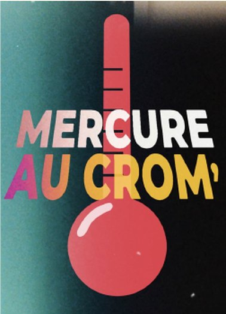
Mercure au Crom'média clermontoisCréation d'un format pour le média digital « En Vrai » : « Mercure au Crom' », une série de freestyles bouillants tournée pendant un été caniculaire. De l'idée à la diffusion, en passant par les partenaires.
- vidéo
- motion
- production
- DA
- organisation
- démarchage partenaires
- négociation
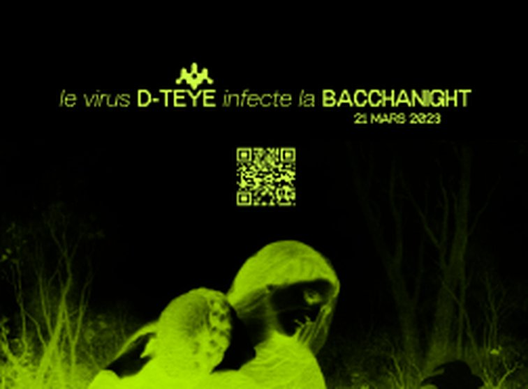
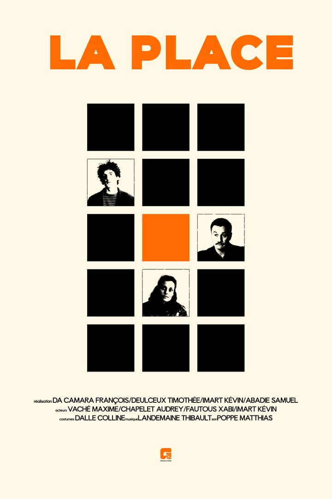